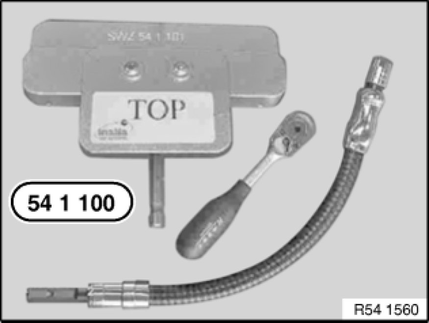
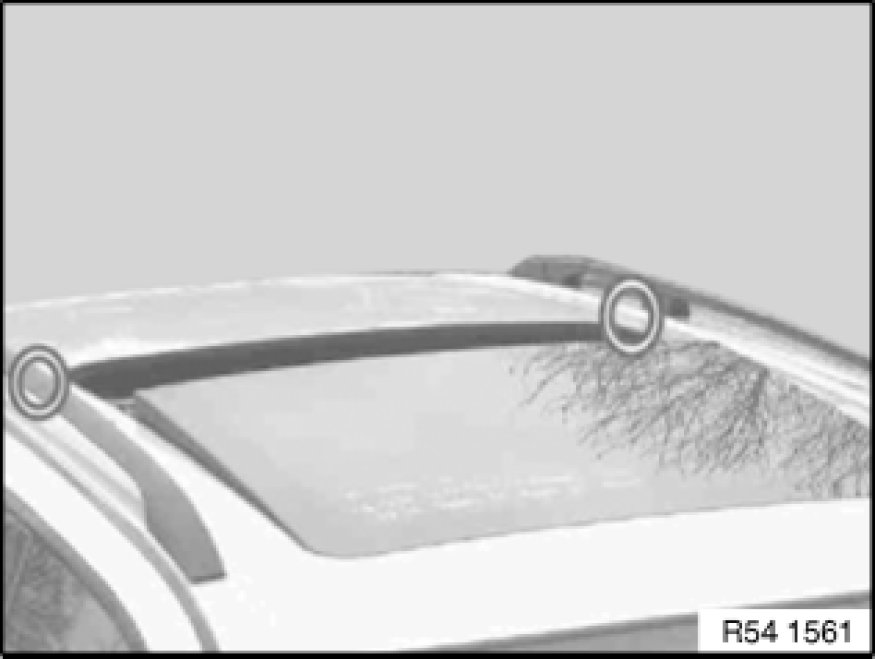
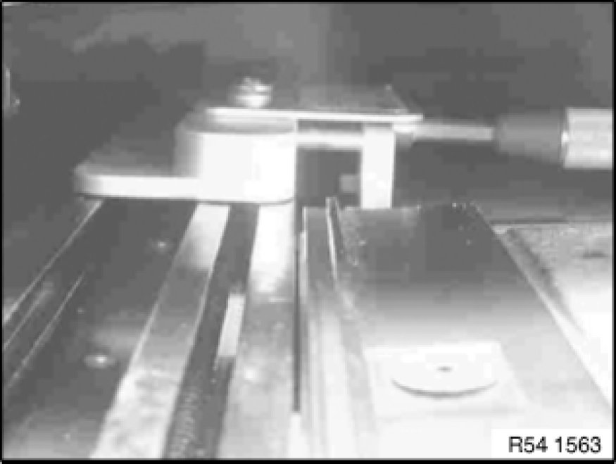
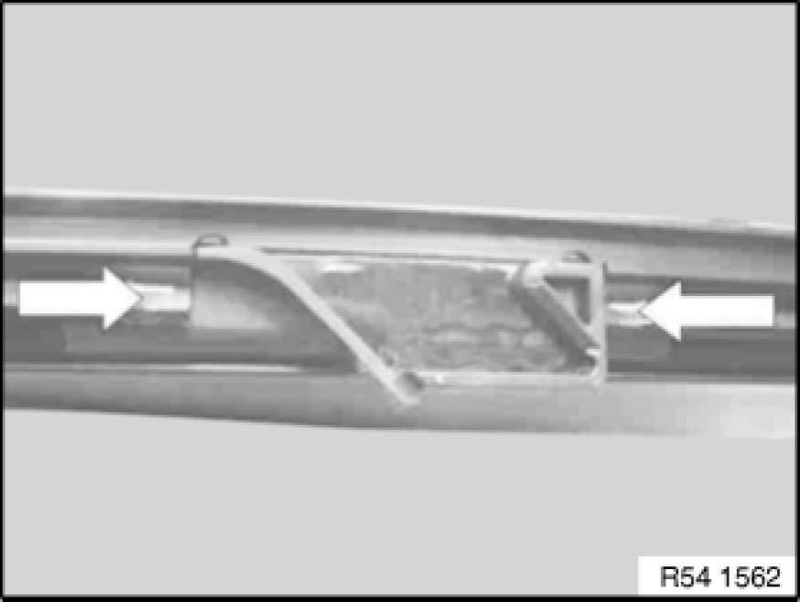

Procedures
54 10 ... - Eliminating floating roofliner clicking noises

Special tools required:
- 54 1 100 Tools and Equipment

The following measures describe how to eliminate clearly audible clicking noises when closing the floating roofliner.
Important!
Only vehicles from the production period 10.12.05 to 10.02.06 may be affected.

Necessary preliminary tasks:
- Remove glass slide/tilt sunroof lid 54 10 175 Removing and Installing Rear Glass Slide/Tilt Sunroof Cover
- Close floating roofliner fully

The following special tools are required
Pressing fixture 54 1 100 Tools and Equipment for panorama glass roof guide rail, comprising:
- Special tool 54 1 101 Pressing fixture
- Special tools 54 1 102 Flexible shaft

Approximate position of end fittings between floating roofliner and roof outer skin.

Place pressing fixture in guide rail and snap into guide rail opening by gently sliding forwards and back.
Important!
Do not engage in rear position (measure ineffective).

Screw pressing fixture by means of reversible ratchet down to stop.
End stop is thereby pressed into the guide rail.
Important!
A helper must press into the pressing fixture during the entire screwing process vertically onto the guide rail so that the pressing fixture does not jam.
Repeat the entire procedure on the other side.